Pre-survey
High rated questions
Questions that were rated 4 and higher by students on a scale of 1 to 5. 1 = Not at all, 2 = Just a little, 3 = Somewhat, 4 = A lot, 5 = A great deal.
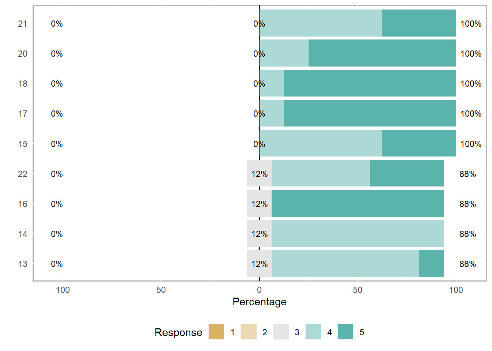
Full question text is in the following talbe:
| question_number | question_prefix | question_text | median |
|---|---|---|---|
| 21 | Presently, I am in the habit of | Connecting key ideas I learn in my classes with other knowledge and situations | 4 |
| 20 | Presently, I am | Willing to seek help from others (professor, peers) when working on a scientific problem | 5 |
| 18 | Presently, I am | Interested in discussing agriculture and related sciences with others | 5 |
| 17 | Presently, I am | Interested in discussing science with friends or family | 5 |
| 15 | Presently, I can | Work effectively with others | 4 |
| 22 | Presently, I am in the habit of | Using systematic reasoning in my approach to problems | 4 |
| 16 | Presently, I am | Enthusiastic about scientific research | 5 |
| 14 | Presently, I can | Manage my time | 4 |
| 13 | Presently, I can | Understand journal articles | 4 |
Medium rated questions
Questions to which most students responded 3 and up on a scale of 1 to 5. 1 = Not at all, 2 = Just a little, 3 = Somewhat, 4 = A lot, 5 = A great deal.
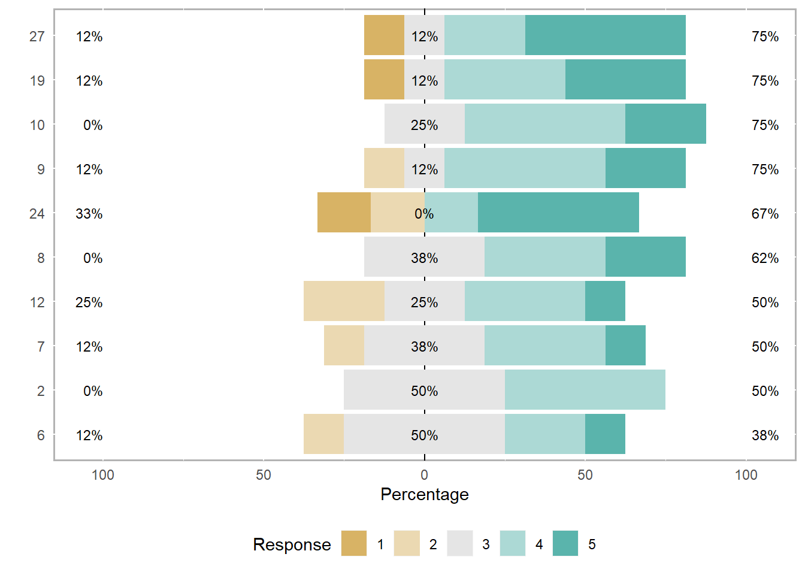
Full question text is in the following talbe:
| question_number | question_prefix | question_text | median |
|---|---|---|---|
| 27 | At this time, I plan to | Work in a science lab | 4.5 |
| 19 | Presently, I am | Confident that I can do research and/or extension in plant pathology or genetics | 4.0 |
| 10 | Presently, I can | Make observations in the lab or greenhouse or field | 4.0 |
| 9 | Presently, I can | Keep a detailed lab notebook | 4.0 |
| 24 | At this time, I plan to | Enroll in a MS program in agricultural or related sciences | 4.5 |
| 8 | Presently, I can | Explain scientific concepts to non-scientists | 4.0 |
| 12 | Presently, I can | Calibrate instruments needed for measurements | 3.5 |
| 7 | Presently, I can | Make oral presentations | 3.5 |
| 2 | Presently, I understand | How to analyze data and interpret results | 3.5 |
| 6 | Presently, I can | Write scientific reports or papers | 3.0 |
Low rated questions
Questions to which most student responded 1 or 2 on a scale of 1 to 5. 1 = Not at all, 2 = Just a little, 3 = Somewhat, 4 = A lot, 5 = A great deal.
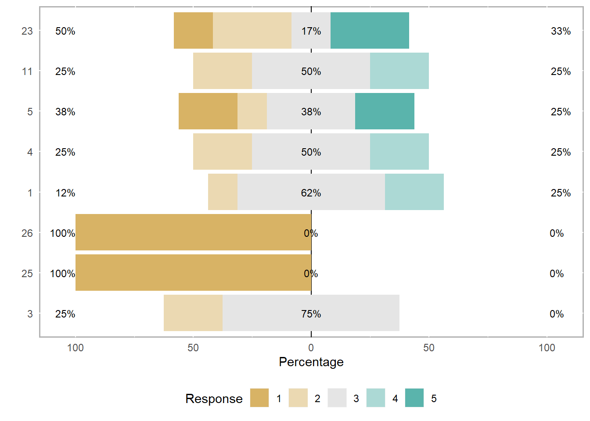
Full question text is in the following talbe:
| question_number | question_prefix | question_text | median |
|---|---|---|---|
| 23 | At this time, I plan to | Enroll in a Ph.D. program in agricultural or related sciences | 2.5 |
| 11 | Presently, I can | Use statistics to analyze data | 3.0 |
| 5 | Presently, I can | Prepare a scientific poster | 3.0 |
| 4 | Presently, I understand | How to identify limitations of research methods and designs | 3.0 |
| 1 | Presently, I understand | How to develop a research question that can be answered with data | 3.0 |
| 26 | At this time, I plan to | Enroll in a program to earn a different profession degree (i.e. law, veterinary medicine etc.) | 1.0 |
| 25 | At this time, I plan to | Enroll in a medical or dental program | 1.0 |
| 3 | Presently, I understand | How to figure out the next step in a research project | 3.0 |
Text entry questions
Answers to question # 28: What do you expect to understand at the end of this research experience that you do not understand now?
| Student responses |
|---|
| How to conduct sustainable agriculture field research, or any kind of field research at all |
| more about research process, poster making, other professional aspects of lab work |
| I expect to understand as well learn how to be more efficient in the lab. I also want to learn how to present my research and make posters |
| I expect that I will better understand how research projects are started in the modern world |
| Lab safety procedures, knowledge of genetic research |
| How to prepare and present scientific research |
| Actually be able to analyze data from research I have performed |
| The differences between various types of research (e.g. field vs. Lab) and how the results are viewed/used in academics versus industry |
Answers to question # 29: What do you expect to be able to do at the end of the internship that you do not know how to do at this point?
| Student responses |
|---|
| Field Research |
| use RNAi, make poster, understand all of processes involved with RNAi |
| NA |
| I expect that I will better be able to apply mathematics and statistics to observed data |
| Use laboratory techniques to identify wheat genes |
| Perform statistical analysis to interpret experimental data |
| Go about research and be able to become more versed in presenting information |
| Collect, analyze, and translate data |
Answers to question # 30: Please comment on your present level of interest in agriculture and related sciences.
| Student responses |
|---|
| I am very interested in agriculture and related sciences. I think this topic is of the utmost importance for the future of our world. |
| very interested, key to future |
| I plan to become a plant pathologist in the future, so therefore I am very interested in the agriculture field and related sciences |
| I am currently very interested in the plant sciences |
| Very high |
| I love botany, but am especially interested in crop science! |
| I am very interested in biological subjects |
| I have a high interest in agriculuture and environmental science. After I graduate, I want to have a career that involves both fields and incorporates educating the public on current issues. |
Post survey
Question 1 through 19
Scale: 1 = No gain, 2 = A little gain, 3 = Moderate gain, 4 = Good gain, 5 = Great gain
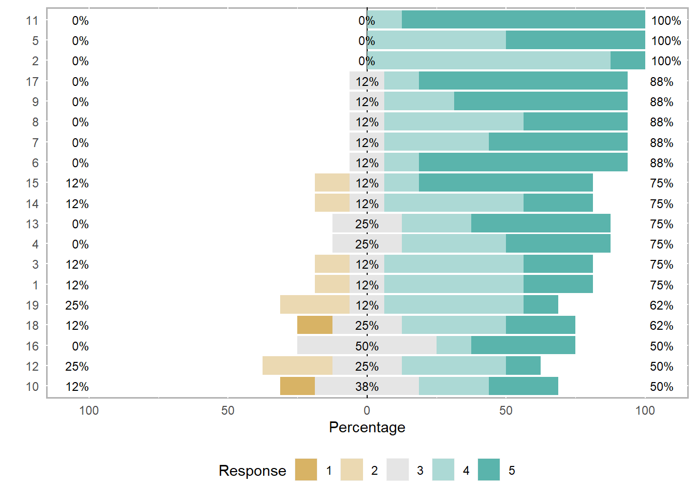
Full question text of questions 1 through 19 is in the following table:
Question prefix = How much did you gain in the following areas as a result of your research/extension experience in past nine weeks?
| question_number | question_text | median |
|---|---|---|
| 11 | Understanding what everyday research work is like | 5.0 |
| 5 | Understanding the relevance of research to my coursework | 4.5 |
| 2 | Figuring out the next step in a research project | 4.0 |
| 17 | Conducting observations in the lab, greenhouse, or field | 5.0 |
| 9 | Ability to work independently | 5.0 |
| 8 | Comfort in working collaboratively with others | 4.0 |
| 7 | Comfort in discussing scientific concepts with others | 4.5 |
| 6 | Confidence in my ability to contribute to science | 5.0 |
| 15 | Preparing a scientific poster | 5.0 |
| 14 | Explaining my project to people outside my field | 4.0 |
| 13 | Making oral presentations | 4.5 |
| 4 | Identifying limitations of research methods and designs | 4.0 |
| 3 | Formulating a research question that can be answered with data | 4.0 |
| 1 | Analyzing data for patterns | 4.0 |
| 19 | Understanding journal articles | 4.0 |
| 18 | Using statistics to analyze data | 4.0 |
| 16 | Keeping a detailed lab notebook | 3.5 |
| 12 | Writing scientific reports or papers | 3.5 |
| 10 | Developing patience with slow pace of research | 3.5 |
Question 20 through 25
Scale: 1 = None, 2 = A little, 3 = Some, 4 = A fair amount, 5 = A great deal
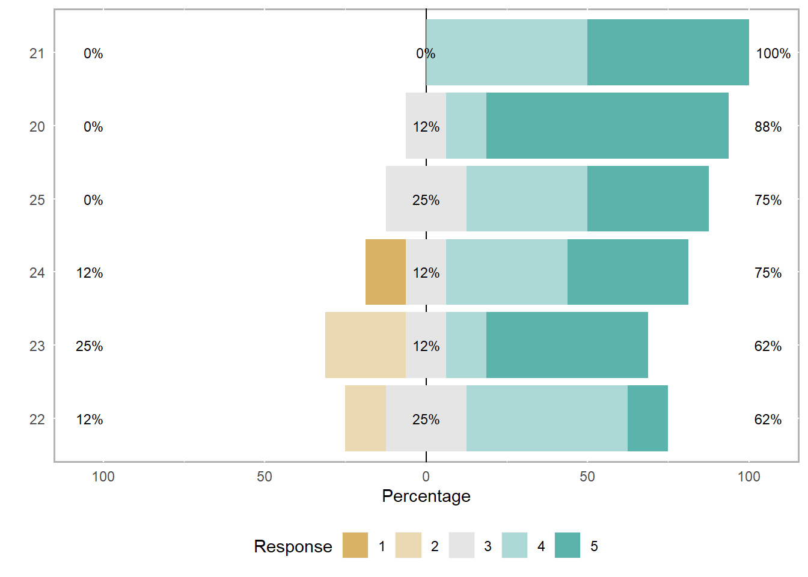
Full question text of questions 20 through 25 is in the following table:
Question prefix = During your research/extension experience, how much did you?
| question_number | question_text | median |
|---|---|---|
| 21 | Feel like a scientist | 4.5 |
| 20 | Engage in real-world science research | 5.0 |
| 25 | Feel part of the scientific community | 4.0 |
| 24 | Work extra hours because you were excited about the project | 4.0 |
| 23 | Feel responsible for the project | 4.5 |
| 22 | Try out new ideas or procedures on your own | 4.0 |
Question 26 through 29
Scale: 1 = Poor, 2 = Fair, 3 = Good, 4 = Excellent
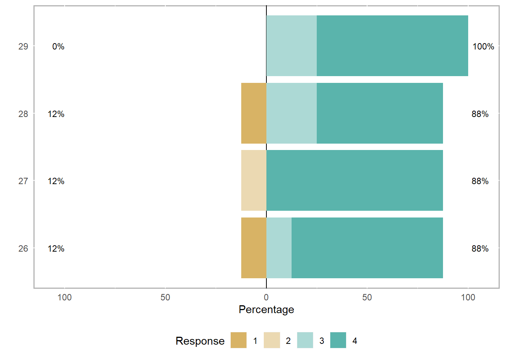
Full question text of questions 26 through 29 is in the following table:
Question prefix = Please rate the following
| question_number | question_text | median |
|---|---|---|
| 29 | The overall research/extension experience | 4 |
| 28 | The advice my research/extension mentor provided about career or graduate school | 4 |
| 27 | My working relationship with research/extension group members | 4 |
| 26 | My working relationship with my research/extension mentor(s) | 4 |
Question 30 through 33
Scale: 1 = Not more likely, 2 = A little more likely, 3 = Somewhat more likely, 4 = Much more likely, 5 = Extremely more likely
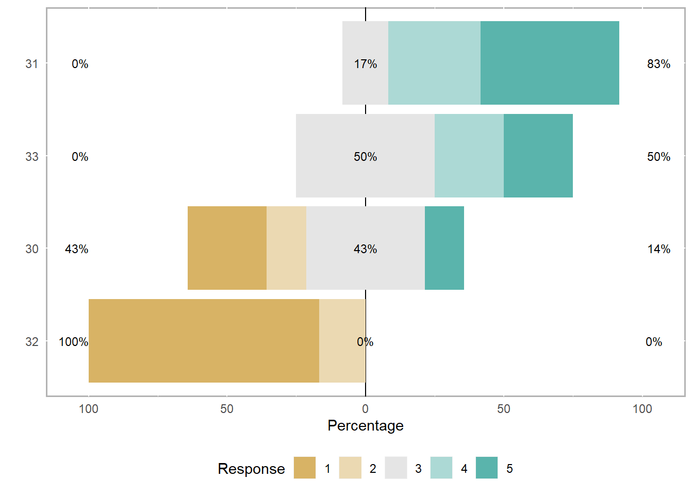
Full question text of questions 30 through 33 is in the following table:
Question prefix = Compared to your intentions before participating in this REEU, how likely are you now to?
| question_number | question_text | median |
|---|---|---|
| 31 | Enroll in a M.S. program in agricultural and related sciences | 4.5 |
| 33 | Work in a science lab | 3.5 |
| 30 | Enroll in a Ph.D. program in agricultural and related sciences | 3.0 |
| 32 | Enroll in a program to earn a different professional degree (i.e. law, veterinary medicine etc.) | 1.0 |
Question 34 through 38
Scale: 1 = Very dissatisfied, 2 = Somewhat dissatisfied, 3 = Somewhat satisfied, 4 = Very satisfied
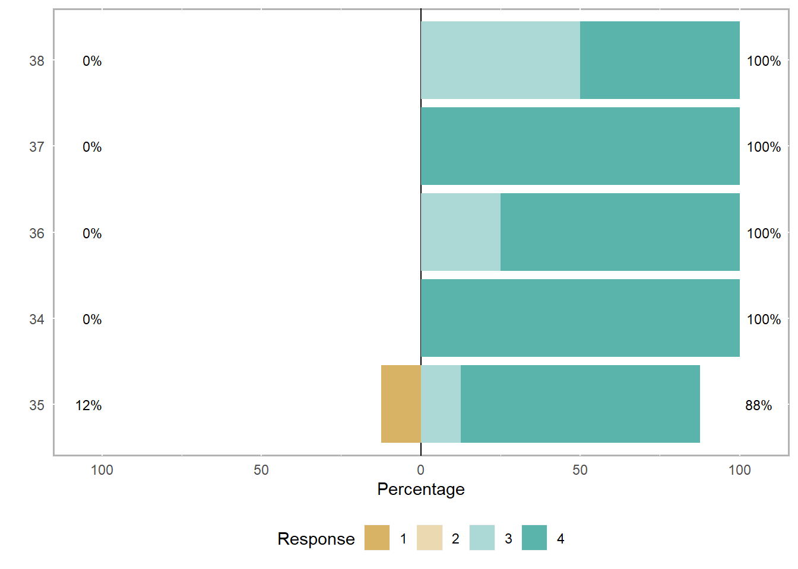
Full question text of questions 34 through 38 is in the following table:
Question prefix = How satisfied were you with the following aspects of the research program?
| question_number | question_text | median |
|---|---|---|
| 38 | Group social activities | 3.5 |
| 37 | Financial support | 4.0 |
| 36 | Support and guidance from other research group members | 4.0 |
| 34 | Support and guidance from the REEU program coordinator, Dr. Mehra | 4.0 |
| 35 | Support and guidance from your research/extension mentor | 4.0 |
Text entry questions (Post survey)
Answers to question: What would have made your research experience better?
| Student responses |
|---|
| More social group activities. Otherwise that that I think everything else was phenomenal. |
| There is nothing I can think of at this time. |
| NA |
| Nothing! Anything I wanted to do, I did and was guided on. Very fun and rewarding! |
| I wish my mentor would have been more involved and that I could have conducted original research or formulate my own research question. Being included in lab activities outside of my project would help keep me busy. |
| I wish I had more time!! I wanted to learn more about research poster “creating” and writing research articles. |
| Having a more “defined” area of research to come up with a project from. At the start of the program, there was a broad spectrum to choose from and kind of gave my research a late/slow start. |
| grad seminars to be optional |
Answers to question: What would improve the REEU, overall?
| Student responses |
|---|
| Adding more activities. Overall, the program has been a huge help for me in deciding whether or not I liked research and want to pursue grad school. I really enjoyed this opportunity. |
| There isn’t much that hasn’t already been discussed in the oral session. |
| This program was great! Honestly I don’t have anything that I really just did not like. It was a fantastic experience! Thank you!!! |
| More interaction with other programs, I think that’s honestly it. This program was excellent, and I cannot stress that enough! |
| I think more activities with other programs would be nice. |
| More diversity (from different universities, 1890, 1862, …..); Help with time management. |
| I don’t know, it was great |
| more regular schedule to plan things in advance more easily |
Post survey (Mentors)
Rating style questions
Scale: 1 = No gain, 2 = A little gain, 3 = Moderate gain, 4 = Good gain, 5 = Great gain
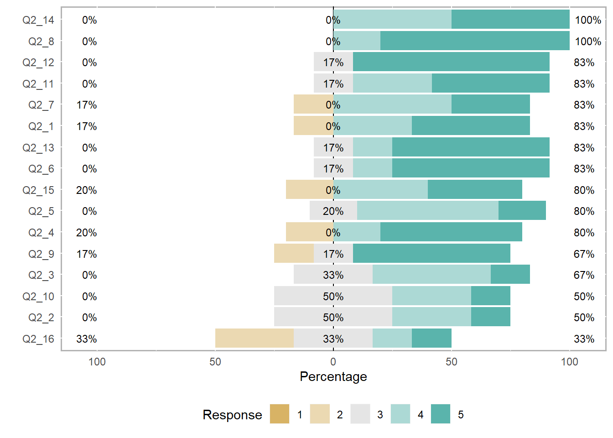
Full question text of above questions in the following table:
Question prefix = How much did your student intern gain in the following areas as a result of their research/extension experience in summer 2019?
| question_num | question_text | median |
|---|---|---|
| Q2_14 | Conducting observations in the lab greenhouse or field | 4.5 |
| Q2_8 | Comfort in working collaboratively with others | 5.0 |
| Q2_12 | Preparing a scientific poster | 5.0 |
| Q2_11 | Understanding what everyday research work is like | 4.5 |
| Q2_7 | Comfort in discussing scientific concepts with others | 4.0 |
| Q2_1 | Analyzing data for patterns | 4.5 |
| Q2_13 | Keeping a detailed lab notebook | 5.0 |
| Q2_6 | Confidence in their ability to contribute to science | 5.0 |
| Q2_15 | Using statistics to analyze data | 4.0 |
| Q2_5 | Understanding the relevance of research to their coursework | 4.0 |
| Q2_4 | Identifying limitations of research methods and designs | 4.5 |
| Q2_9 | Ability to work independently | 5.0 |
| Q2_3 | Formulating a research question that can be answered with data | 4.0 |
| Q2_10 | Developing patience with slow pace of research | 3.5 |
| Q2_2 | Figuring out the next step in a research project | 3.5 |
| Q2_16 | Understanding journal articles | 3.0 |
Text entry style questions
Answers to question: What has been the most beneficial aspect of the REEU program for you?
| Mentor responses |
|---|
| sharing research with undergrad and supporting interest in science. |
| The most beneficial aspect of the REEU program was being matched with an enthusiastic and talented young scientist to mentor. |
| I really needed to hone my skills for “explicit teaching.” That gain in skills for me has paid off in other areas. |
| It was a wonderful learning experience for me and has shown me that maybe teaching or mentoring others is something that I want to pursue in the future. |
| I learned how to establish a good relationship with my mentee, and how to make explanation for the project. |
| Working with undergrads at different levels, and training them with proper strategy to promote them improving. |
Answers to question: What could be done to improve the program for you?
| Mentor responses |
|---|
| have a postdoc or grad student as co-mentor who has a related project |
| I would have like the program to last longer and involve less graduate school seminars. |
| NA |
| I believe there should have been more social aspects for this program. Something that would help bring together not just mentees, but the mentors also. I do understand that some mentors may have been too busy. |
| N/A |
| generally the program is good, maybe gather a little more info for applicants,such as a coverletter for intention, etc |
Answers to question: What could be done to improve the program for students?
| Mentor responses |
|---|
| run the length of the internship longer? Very hard to get in-depth projects finished in just few weeks. |
| I think making the graduate school seminars optional would have improved the program for my student, because it is not common for people in her field to go to grad school. It was often hard to tare her away from her experiments to go to those seminars. |
| NA |
| I think more exposure would have been great: on social media, etc. I also think they would have benefited (or even found interesting labs to pursue) if either the hosting lab or the other labs had forums or seminars for either their post-docs or PIs. Something like the seminars Dr. Cook was in charge of last semester. |
| N/A |
| maybe provide a detail instruction guide about life on campus and travel related info before they arrive, such as possible daily spending, reimbursement, etc |
Answers to question: Is there anything else you would like to share with us about your experience as an REEU mentor?
| Mentor responses |
|---|
| NA |
| I really enjoyed the REEU program. Everyone was wonderful to work with. I learned a lot in the mentor training session. We generated good data, had a lot of fun, and learned from each other. What a great experience! |
| It was a great experience. I had such a great student that I would consider hiring him as an MS student, or at the very least assisting him to find a good position suited to him. |
| It was fun and interesting. My mentee and I were able to learn from each other and discuss potential plans in the future- either in academia or the industry. |
| N/A |
| NA |
Student vs. mentor assessment
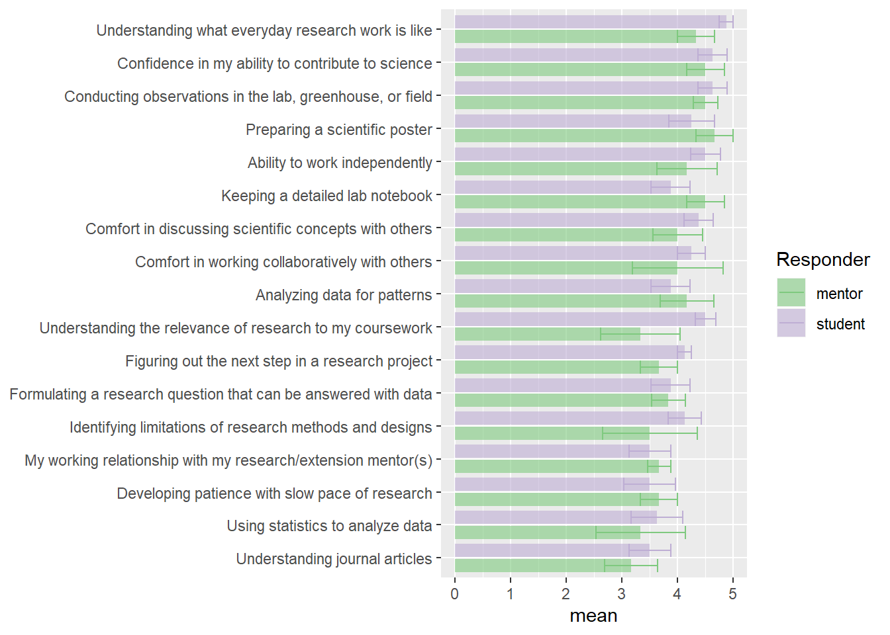
Scale: 1 = No gain, 2 = A little gain, 3 = Moderate gain, 4 = Good gain, 5 = Great gain
Pre vs. post assessment
There were 11 questions that were asked in both pre and post surveys. Let’s see if there is increase in rating for these questions as a result of the internship.
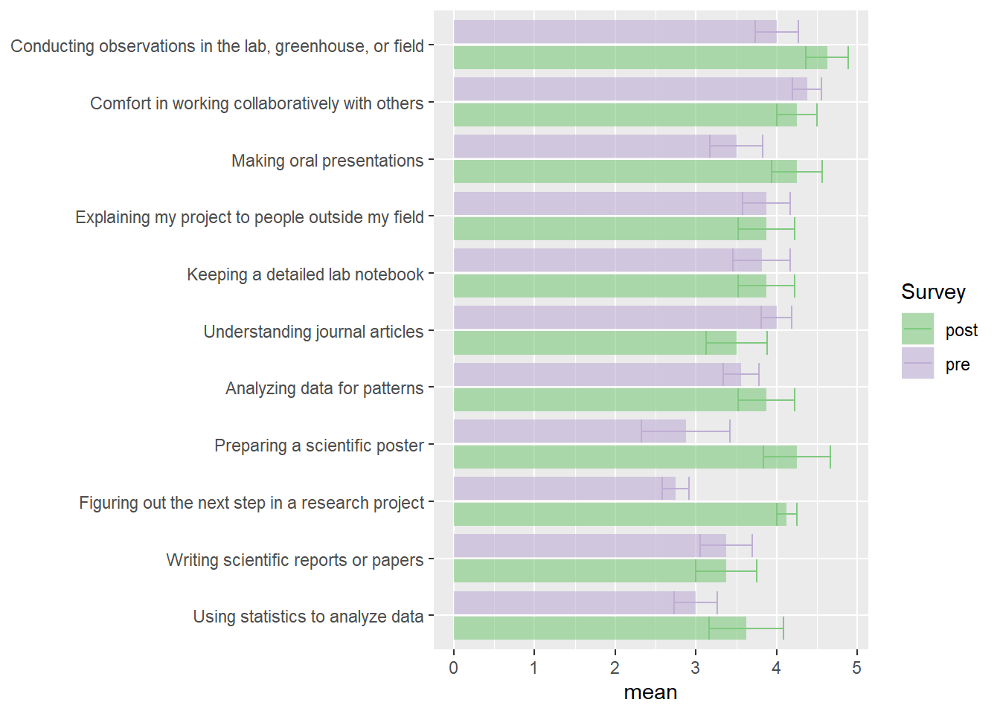